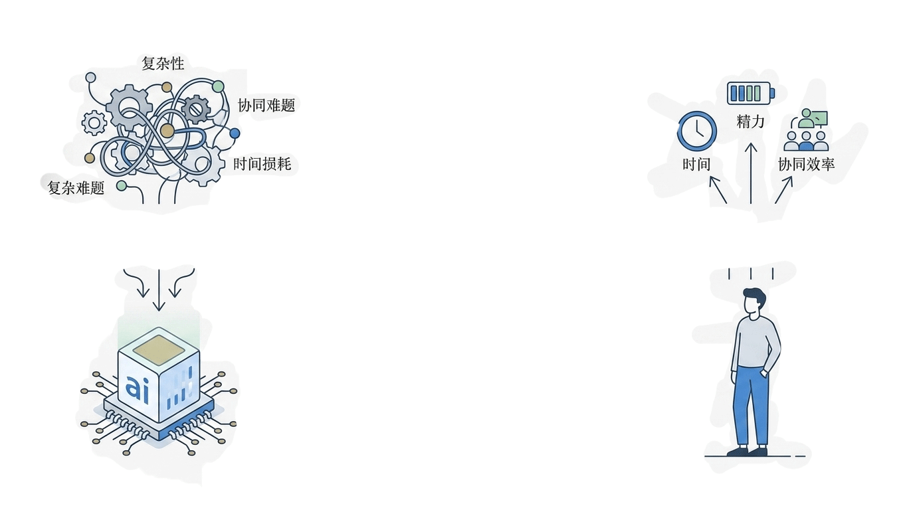
把项目管理的复杂性，留给我们。
把时间、精力、协同成本，还给你。
庆生智能任务管理系统 | 以AI重构协作，让管理回归简单
演示系统： https://qingshengweb.unielite.wang/
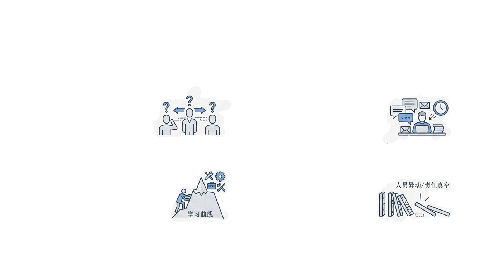
一个问题
如果你是团队负责人、项目经理，或者任何一个需要协调多人完成复杂任务的人，你一定遇到过这些令人头疼的管理痛点：
01 / 信息不同步
任务进度模糊、责任人不明确、节点变动难同步。你需要在微信群、邮件、会议间反复切换拼凑信息，不仅效率低下，更易因信息偏差导致执行错位。
02 / 沟通成本吞噬效率
从任务分解到反复确认，再到无休止的群内@所有人，大量有效工作时间被无效沟通挤占。真正用于推进项目的精力被稀释，整体效率大打折扣。
03 / 管理门槛居高不下
专业工具往往伴随陡峭的学习曲线，从培训教学到全员适配耗时耗力。项目尚未启动，团队已在工具磨合上消耗大量成本，反而加重了管理负担。
04 / 协调成本彻底失控
人员异动、休假离岗极易引发任务断层与责任真空，子任务流转无人承接，进度瞬间停滞。缺乏灵活的协调机制，让项目的抗风险能力变得极其脆弱。
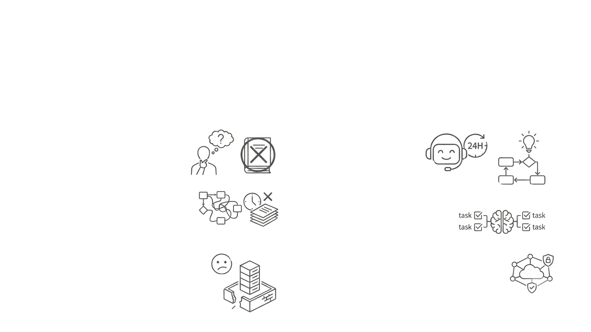
我们的回答：一个AI项目经理，24小时在线，通过邮件为你服务。
它不是——
不是需要繁琐培训的软件，
拒绝为了工具而改变工作习惯
不是增加负担的复杂流程，
不做团队协作的“效率枷锁”
不是中心化的管控工具，无需专人维护，
打破信息孤岛
它是——
AI驱动的任务管理中枢
智能拆解任务、动态分配资源，
自动跟进进度与风险预警
零学习成本的邮件原生系统
无需安装任何软件，
直接通过邮件收发任务，
无缝融入日常
安全高效的分布式协同引擎
人人各司其职，
系统自动协同上下游，
保障数据安全与隔离
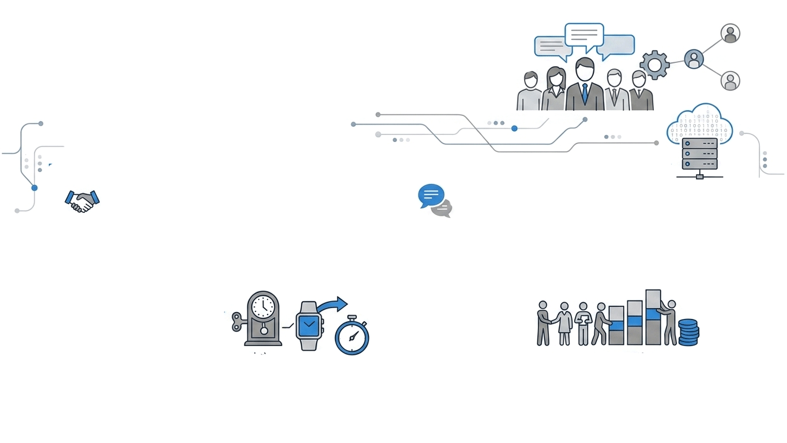
价值一：零学习成本 · 全员即刻可用
“你不需要学怎么用系统，系统来理解你。”
唯一交互：原生邮件驱动
无需改变任何工作习惯，用最熟悉的工具连接系统，操作门槛降至冰点。
自然语言：像说话一样下达指令
无需记忆代码或格式，用日常沟通的语言描述需求，系统自动智能解析。
注册账号？发一封邮件。创建任务？发一封邮件。更新进度、查询状态、提交报告？依然是发一封邮件。无需安装客户端，无需登录后台，无需复杂配置。
效率飞跃：半小时学习 → 1分钟启用
彻底告别冗长的系统培训与适应期，全员即刻上手，将时间成本转化为业务价值。
极致降本：零采购、零部署、零运维
依托现有邮件生态运行，无任何软硬件采购费用，无需专业IT团队维护，大幅削减运营开支。
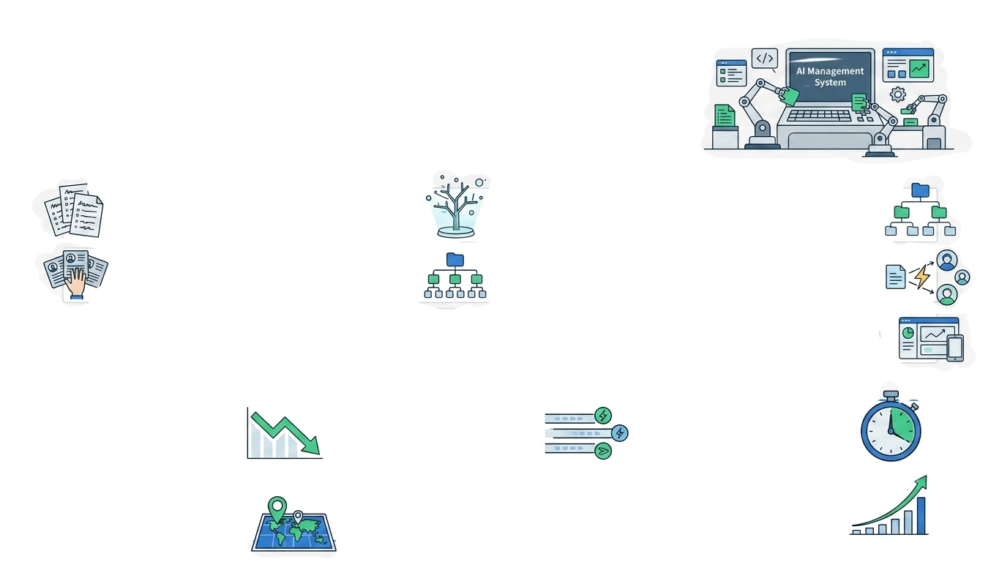
价值二：AI自动执行 · 管理成本断崖式下降
你不用再亲自做这些事了：
原本：人工拆解项目清单，耗时耗力且易疏漏
现在：AI 理解项目描述，自动生成层级清晰的任务树
原本：手动分配负责人，逐一沟通并确认权限
现在：系统自动绑定人员权责，权限配置一键同步到位
原本：反复私聊询问进度，催办效率低且打扰他人
现在：系统自动发送状态通告，智能提醒更新，无人遗漏
协调工作量骤降
↓ 70%+
项目经理从繁琐协调中解放，专注核心决策与规划
信息同步零延迟
自动收
告别“反复问”的低效模式，变更实时同步，信息流转无阻碍
任务拆解秒级完成
1 分钟
从“耗时半天”到“一键生成”，效率呈指数级飞跃提升
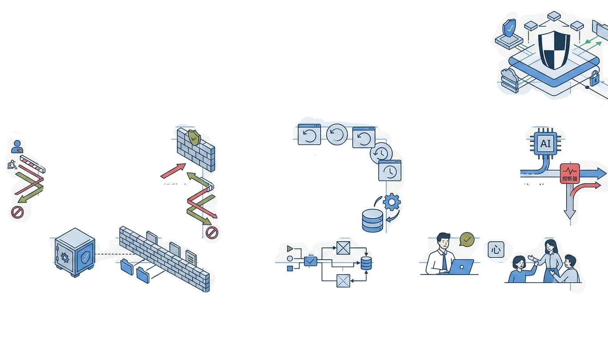
价值三：权限即安全 · 错误不扩散，越权不发生
“每个人只能操作自己作为负责人的任务。”这是系统最底层的安全铁律，也是协作信任的基石，确保所有操作都在权限的“安全茧房”内运行。
越权操作 · 即时阻断
试图修改他人任务时，系统立即拦截并反馈原因，从入口切断越权篡改风险，保障数据归属权不可侵犯。
误删风险 · 系统兜底
即便误触删除非所属任务，系统也会直接驳回请求，从根本上避免因人为疏忽造成的不可逆数据损失。
AI偏差 · 权限熔断
若AI指令解析出现目标匹配偏差，执行前的强校验会触发“熔断”，确保错误指令无法生效，杜绝智能误操作。
🛡️ 数据绝对安全
构建不可逾越的权限边界，彻底消除越权操作风险，确保任务数据的机密性与完整性。
🔒 容错能力倍增
AI理解偏差或人为误操作都无法造成数据污染，系统具备极强的鲁棒性与自我保护能力。
❤️ 极致心理安全
成员无需担心操作失误带来的严重后果，系统为协作兜底，释放更多创造力与协作效率。
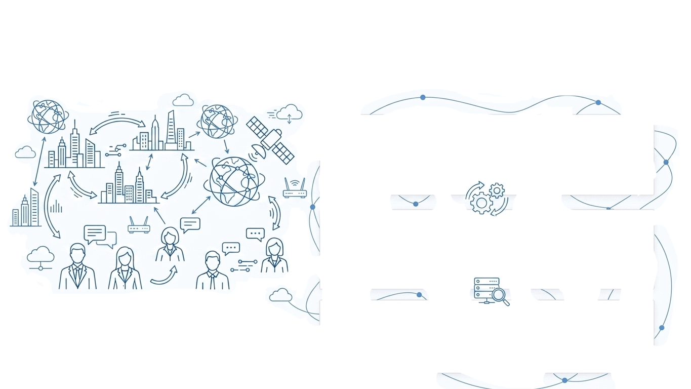
价值四：跨时空协作 · 团队不再需要“同时在线”
无论团队分布在不同城市、国家或时区，系统都能自动流转任务与信息。打破物理空间的阻隔，让异步协作成为常态，真正实现“人虽不在一起，事却无缝衔接”。
消除等待损耗，拒绝无效空转
彻底告别“等人回复”的低效，任务自动推送至负责人，无需实时守在线上，让每个人都能按自己的节奏高效推进工作。
信息实时同步，杜绝返工成本
所有进度更新、问题反馈系统自动记录归档，永久可查。消除信息传递中的偏差与遗漏，避免因信息不同步导致的重复沟通与无效返工。
跨越时区障碍，释放全球效能
无论是跨国团队还是远程办公，系统让协作跨越昼夜。实现24小时不间断的任务接力，最大化发挥全球化人才的协同价值。
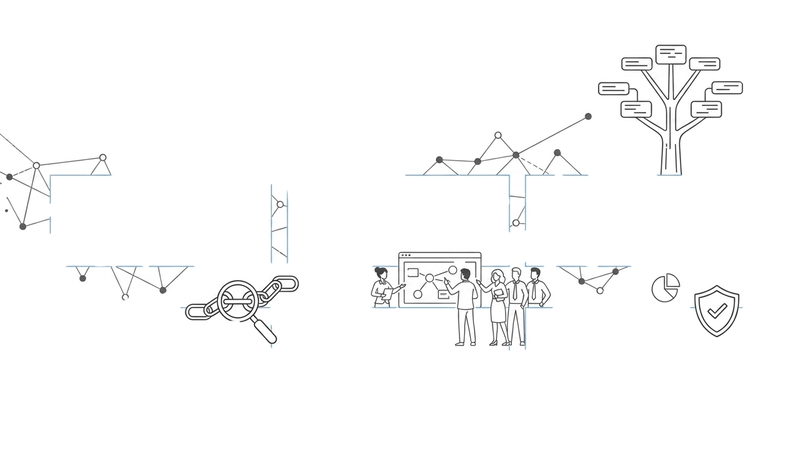
价值五：任务树结构 · 父子关系一目了然
“这不是一堆零散的待办事项，而是一棵会生长的任务树。”
一个项目 = 一个根任务
确立项目的起点与核心，作为所有任务的源头，承载整体目标与战略方向，是任务树的主干。
项目拆解 = 创建子任务
将宏大的根任务拆解为可执行的具体单元，明确阶段目标与关键节点，实现任务的横向与纵向延伸。
无限层级，随需扩展
支持子任务的无限次裂变与细分，层层递进直至形成可直接落地的最小执行动作，适应任何复杂度。
拆解逻辑可视化
打破信息壁垒，让任务的层级关系与依赖链条直观呈现，团队成员对项目全貌与个人职责一目了然。
权责自动关联
父任务负责人自动成为子任务的默认负责人，无需重复配置。人员变动时，权限同步更新，杜绝管理断层。
全链路可追溯
从根任务到末梢任务的历史轨迹完整保留，每一步的决策与执行都有据可依，为项目复盘与优化提供坚实支撑。
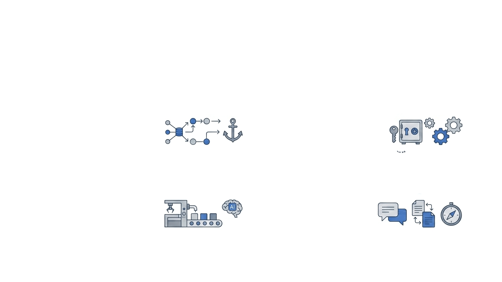
价值六：加强科研监督 · 杜绝管理疏漏带来的造假问题
通过构建全流程、透明化、可追溯的数字化科研管理环境，从制度和技术层面双管齐下，系统性防范科研造假。
全链路可追溯
结构化任务树，过程可视化；完整历史轨迹，操作有据可依。
精细化权限控制
严格权限隔离，构筑“安全茧房”；系统兜底防护，杜绝越权篡改。
自动化流程执行
AI驱动任务流转，减少人为干预；智能进度追踪，异常风险预警。
透明化协作沟通
沟通记录与任务绑定，全程留痕；自动沉淀知识，形成可信知识库。
将科研管理从“人治”升级为透明、高效、可信的“智治”模式，从根本上铲除科研造假土壤。
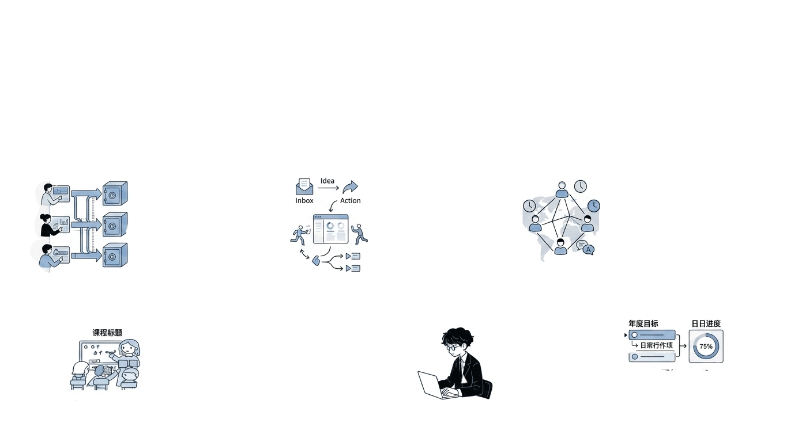
应用场景 · 谁需要它？
这个系统服务于任何一个需要“把复杂事情拆解清楚、让多人协同推进”的人，无论是团队协作还是个人管理，都能提供高效的解决方案。
01 企业项目团队
多项目并行时信息自动隔离，负责人仅可见权责内任务，既保障数据安全，又实现跨项目的顺畅协同。
02 敏捷创业团队
开箱即用，以邮件为唯一入口，无需学习复杂操作。完美适配人少事多、流程灵活的创业节奏。
03 全球研发协作
强大的异步协作能力，打破地理与时差限制。让分布在不同国家的研发人员按自己的节奏高效推进。
04 教育培训机构管理
将课程拆解为可视化任务树，讲师权责清晰，多班级、多讲师进度自动汇总，大幅降低教务管理成本。
05 个人效能提升
把年度计划、学习目标拆解为可执行的子任务。让复杂的个人目标清晰化，每日进度一目了然。
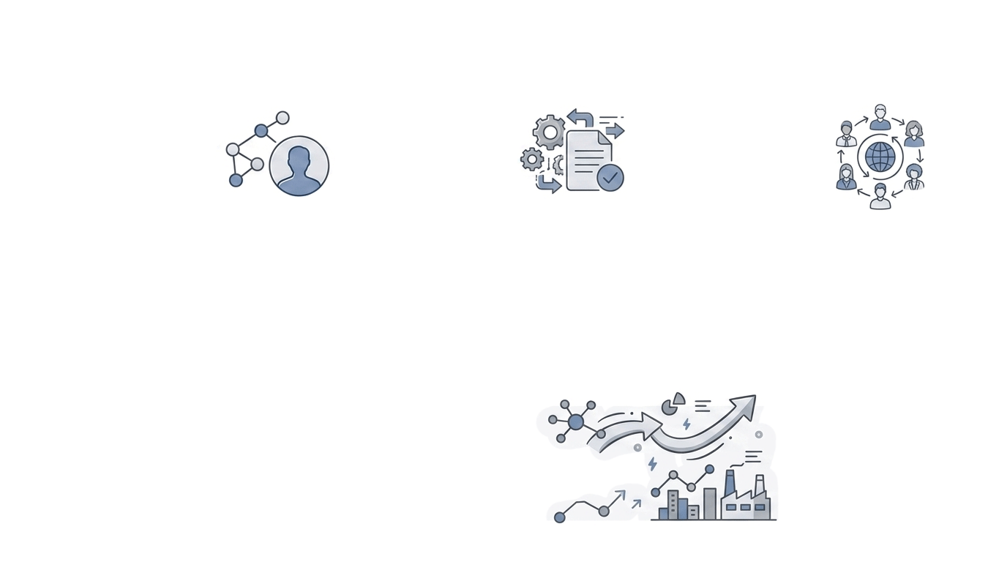
使用流程 · 三步启动
01 注册开通
1分钟极速完成，极简准入
向“qingsheng001@qq.com”发送邮件内容“汪洋汪洋”，接收自动邀请后，按格式回复【姓名+技能+单位+简介】，即刻完成注册认证，无需繁琐表单填写。
02 任务创建
自然语言驱动，一键生成任务
发送指令邮件：「创建任务【名称】，描述【详情】」，系统自动生成任务并设您为负责人；支持指令「添加负责人【姓名】」，一键分配协作角色。
03 智能协作
全场景邮件交互，自动同步
自然语言指令覆盖全流程：查询进度、更新百分比、拆分子任务、提交完成报告。所有操作通过邮件触达，AI自动解析并实时同步状态。
“一切皆邮件，一切皆自然语言，一切皆自动化。”
告别复杂的软件操作与频繁的应用切换，回归最原生的沟通方式。
让工作流在无形之中高效流转，AI 为您自动处理所有繁琐的同步、记录与提醒工作，
释放您的核心创造力。
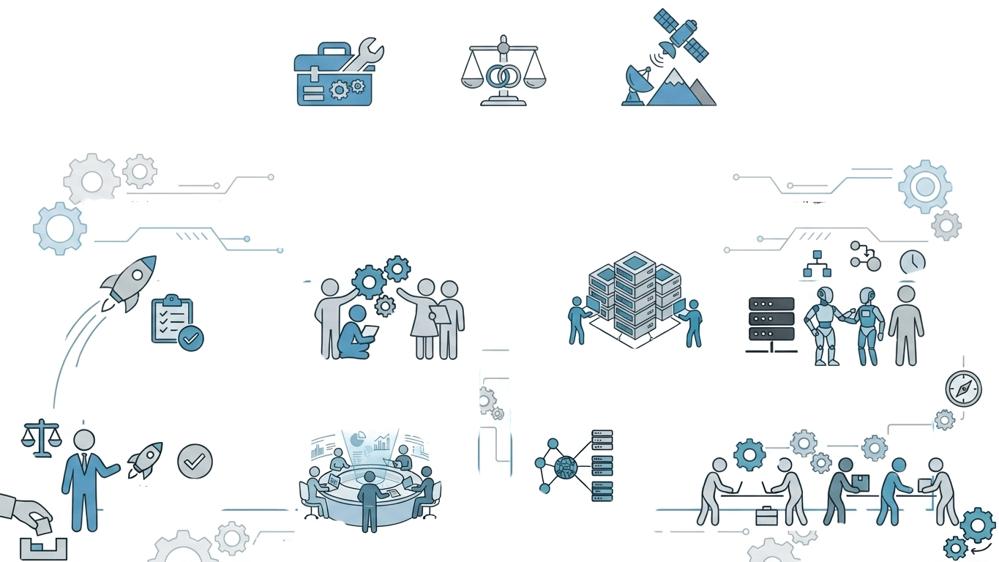
技术是工具，管理是目标，效率是结果
庆生智能任务管理系统，将AI的“理解能力”与“执行能力”深度植入项目管理核心，精准攻克信息分解、权限分配、进度追踪、同步通知等繁琐环节，重塑管理效率。
01 / 回归管理本质
剥离繁杂流程，专注于决策、推进、完成三大核心动作，让管理者从执行者的角色中解放，聚焦战略判断与方向把控。
02 / AI 接管琐碎执行
自动化完成任务拆解、资源匹配、实时同步，以毫秒级响应替代人工协调，确保每一个细节都被精准执行。
“让AI替你完成那70%的协调工作，把30%的决策精力，留给真正重要的事情。”
庆生智能任务管理系统 · 你的AI项目经理，始终在线